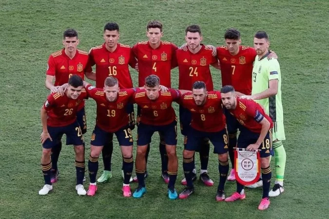

Seleção da Espanha
Seleção da Espanha nas Copas do Mundo
A seleção espanhola participou de sua 15ª edição da Copa do Mundo de futebol em 2018. A seleção de futebol
masculino da Espanha é conhecida como La Furia Roja (A Fúria Vermelha) ou apenas La Roja (A Vermelha). Apesar
de ter fortes equipes a seleção espanhola foi campeã do mundo apenas em 2010. A seleção da Espanha venceu três
edições da Eurocopa (1964, 2008 e 2012).

Retrospecto da seleção da Espanha em Copas do Mundo
1930 - Não disputou
1934 - Eliminada nas quartas-de-final
1938 - Desistiu devido à Guerra Civil Espanhola
1950 - 4º lugar
1954 - Não se classificou
1958 - Não se classificou
1962 - Eliminada na 1ª fase
1962 - Eliminada na 1ª fase
1970 - Não se classificou
1974 - Não se classificou
1978 - Eliminada na 1ª fase
1982 - Eliminada na 2ª fase
1986 - Eliminada nas quartas-de-final
1990 - Eliminada nas oitavas-de-final
1994 - Eliminada nas quartas-de-final
1998 - Eliminada na 1ª fase
2002 - Eliminada nas quartas-de-final
2006 - Eliminada nas oitavas-de-final
2010 - Campeã
2014 - Eliminada na 1ª fase
2018 - Eliminada nas oitavas-de-final
Técnico da Seleção da Espanha
Luis Enrique
Goleiros
Unai Simón
David Raya
Arnau Tenas
Zagueiros
Pau Torres
Aymeric Laporte
Eric García
Hugo Guillamón
Lateral
Marcos Alonso
Jordi Alba(C)
Daniel Carvajal
César Azpilicueta
Volantes
Rodri
Pedri
Meias
Marcos Llorente
Gavi
Carlos Soler
Koke
Dani Olmo
Pontas e Centroavantes
Ferran Torres
Yéremy Pino
Pablo Sarabia
Álvaro Morata
Raúl de Tomás